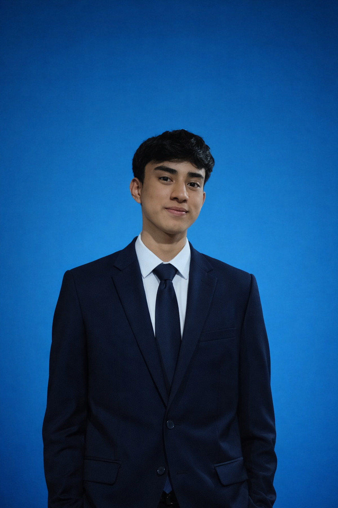

Louis Isaac Ramirez Davila
Estudiante de Programación de Software - SENA
Habilidades
Básquetbolista
75%
Inglés
60%
Matemáticas
78%
Experiencias académicas y personales
Estudios actuales
- Grado: 11 — Estudiante en curso
- Formación técnica: Programación de Software — SENA (desde 2025)
Estudiante de grado 11 y aprendiz de Programación de Software en el SENA desde 2025. Interesado en desarrollo de aplicaciones, páginas web y robótica. Busco afianzar experiencia práctica mediante proyectos y prácticas.
Conocimientos y proyectos
- Robótica: conocimientos en diseño y programación básica de sistemas robóticos (sensores, actuadores y control).
- Desarrollo de aplicaciones móviles: creación de apps sencillas.
- Desarrollo web: páginas web con HTML, CSS y JavaScript .
- Desarrollé una página web de compras usando HTML/CSS y JavaScript para presentar un proyecto escolar.
- Participé en proyectos de robótica diseñando circuitos y programando rutinas básicas de control en un robot.
Creé una aplicación móvil prototipo para gestión de tareas.
Habilidades complementarias
- Trabajo en equipo y comunicación (proyectos grupales escolares o SENA).
- Resolución de problemas y razonamiento lógico (cursos de razonamiento cuantitativo y pensamiento matemático).
- Deportividad y disciplina: básquetbolista (75%).
Estudiante de grado 11 y aprendiz de Programación de Software en SENA (desde 2025). Interés en desarrollo web y móvil, con experiencia inicial en robótica y proyectos escolares. Buscando oportunidades de práctica y colaboración.
Educación
Estudiante — Programación de Software — SENA
| Tipo |
Curso |
Fecha inicio |
Fecha fin |
Lugar |
| Certificado de Aprobación |
Fortalecimiento de la lógica y el pensamiento matemático como herramienta en el campo de la tecnología |
19 Diciembre 2024 |
26 Diciembre 2024 |
Neira, Caldas |
| Certificado de Aprobación |
Fortalecimiento en razonamiento cuantitativo para articulación con la media |
19 Noviembre 2025 |
22 Noviembre 2025 |
Neira, Caldas |